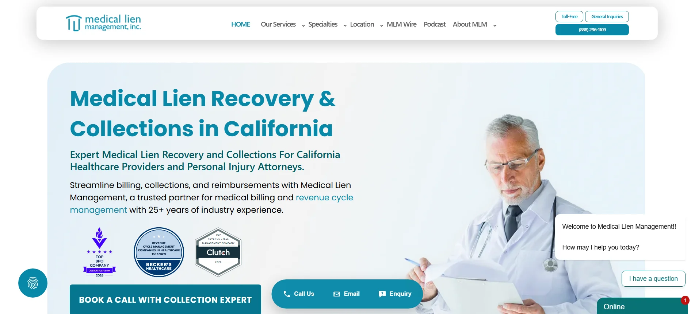
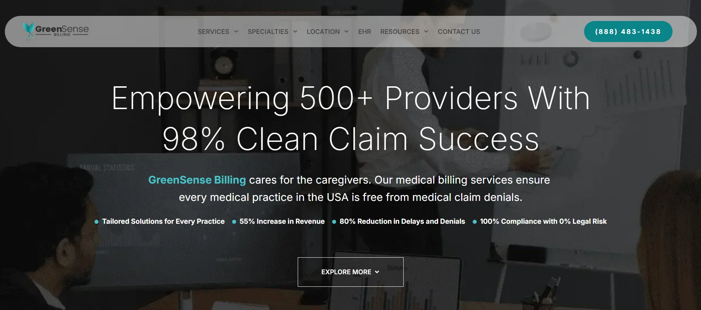

HEALTHCARE, MEDICAL LIEN MANAGEMENT, MEDICAL BILLING & LEAD GENERATION
Medical Lien Management – Building a Commercial SEO Foundation for Healthcare Lead Generation
I worked on establishing and improving the SEO foundation of Medical Lien Management, a healthcare-related lead-generation website. The focus was on building commercial search visibility, creating intent-based content, improving site architecture and supporting qualified lead generation through organic search.

Project Snapshot
SEO focus areas
- On-Page SEO
- Commercial Keyword Targeting
- Site Architecture
- Content Strategy
- GEO & AEO
- Technical SEO
- Off-Page SEO
- Local SEO
- Internal Linking
- Conversion-Focused Optimization
The Challenge
Medical Lien Management is a newer B2B website in a specialist healthcare niche. The business objective was qualified leads, which meant building visibility for high-intent commercial searches from a standing start.
- Establishing an SEO foundation for a newer website with a young authority profile.
- Competing for commercial searches where buyers compare providers.
- Balancing pages built to convert with informational content that builds topical authority.
- Structuring the site so each kind of page has a clear job and links to the others.
- Building authority on a limited budget.
- Becoming visible in AI search for commercial comparison queries as well as in traditional results.
SEO Strategy & Implementation
The work, organized by discipline. Open any block to see what I did, the approach, how it was carried out and why it mattered.
- Commercial PagesSupporting BlogsComparison Content
- Topical Authority
- Search Visibility
- Qualified Leads
- Entity Optimization
- Direct Answer Structure
- Supporting Evidence
- Technical Accessibility
- AI Search Visibility
Site architectureDesigning a three-category structure so each page type serves a different part of the search journey.
What I worked on
Designing a three-category structure so each page type serves a different part of the search journey.
The strategy
Commercial pages convert, informational pages build authority, and comparison pages capture buyers who are already choosing between providers. Together they support topical authority and AI search presence.
How it was implemented
The site was organized into the three categories below, and each category was supported by internal links to the others.
Why it mattered
A clear architecture makes the site easier for search engines to understand and gives each type of searcher a page designed for them.
- Business Pages: commercial service pages designed to attract users with strong buying intent and generate qualified leads
- Depth Blogs: informational content that establishes topical authority across relevant healthcare and medical billing topics
- Best-of and Comparison Blogs: commercial-informational content for high-intent searches such as Best Medical Billing Companies, Best RCM Companies and Best Workers' Compensation Billing Companies
On-page SEO & content optimizationOptimizing commercial and supporting pages around keyword research and search intent.
What I worked on
Optimizing commercial and supporting pages around keyword research and search intent.
The strategy
Pages were planned from keyword and intent research, with clear primary and secondary targets, a logical heading hierarchy and content that fills gaps competitors leave.
How it was implemented
On-page audits checked execution, and internal linking tied business pages to supporting and comparison content.
Why it mattered
Well-structured, intent-matched pages are the base that commercial visibility is built on.
- Keyword research
- Search intent mapping
- Primary and secondary keyword placement
- Heading hierarchy
- Content optimization
- Entity optimization
- Internal linking
- On-page audits
- Content gap analysis
GEO & AEOPositioning comparison content so AI search can understand and surface it.
What I worked on
Positioning comparison content so AI search can understand and surface it.
The strategy
Brand-first positioning, comparison content, direct answers, structured information and entity optimization were used to support visibility for commercial queries in AI search.
How it was implemented
The verified example is the query "Best Workers' Compensation Billing Companies in California", where this approach supported AI visibility.
Why it mattered
Buyers increasingly ask AI platforms for recommendations. Content built to be extracted gives the site a route into those answers.
- Content structuring for AI extraction
- Conversational query research
- Commercial query alignment
- Relevant industry statistics and references
- Topical depth
- Schema implementation where appropriate
Technical SEOSetting up and monitoring the technical basics of a newer site.
What I worked on
Setting up and monitoring the technical basics of a newer site.
The strategy
A newer site needs search engines to find and index its pages reliably, so the technical groundwork was set up early and monitored.
How it was implemented
Setup and audits covered the items below.
Why it mattered
Crawlability and clean indexation are the precondition for any commercial visibility.
- XML sitemap setup
- Robots.txt configuration
- Crawlability
- Indexation monitoring
- Canonical tags
- URL structure
- Technical audits
- Structured data
Off-page SEOBuilding authority in a cost-conscious way.
What I worked on
Building authority in a cost-conscious way.
The strategy
With a limited budget, the focus was on credible, relevant sources of links and mentions rather than large paid programs.
How it was implemented
Work combined listings, research content and journalist-style outreach.
Why it mattered
Authority is needed to compete for commercial terms, and this approach builds it steadily and sustainably.
- Business listings
- Niche directories
- Citation building
- Strategic link exchanges
- Research-based content
- HARO-style journalist outreach
- Budget-conscious authority building
Local SEOAdding regional relevance where it applies.
What I worked on
Adding regional relevance where it applies.
The strategy
Regional searches often show strong intent, so location-specific content and consistent business information were used to support them.
How it was implemented
Local work included the items below. No particular Google Business Profile ranking or Local Pack position is claimed.
Why it mattered
Regional targeting helps match searchers looking for providers in a specific area.
- Regional keyword targeting
- Location-specific landing pages
- Local competitor analysis
- Google Business Profile optimization where applicable
- NAP consistency
- Local citations
- LocalBusiness schema where applicable
- Local link-building strategies
Results & Achievements
Results for Medical Lien Management. No traffic or lead numbers are published for this site on its own.
- Improved crawlability and indexation
- Growth in commercial keyword visibility
- Page-one visibility for competitive commercial topics
- AI visibility for "Best Workers' Compensation Billing Companies in California"
- Inbound leads referred from ChatGPT
Across my healthcare lead-generation websites, organic search moved from no inbound leads to a steady flow of qualified leads. This is a portfolio-level result and is not a figure for Medical Lien Management alone.
MY ROLE
SEO Specialist – Healthcare Lead Generation & AI Search Optimization
I built and managed the SEO foundation of the site, from how it is structured to how its content is written, technically maintained and made visible in AI search.
- Site architecture and commercial keyword strategy
- On-page SEO and content strategy
- Technical audits
- GEO and AEO
- Internal linking
- Authority building
Where this fits in my experience
Newer lead-generation websites (Medical Lien Management, GreenSense Billing and Virtual MoJoe): building SEO foundations, designing scalable architecture, targeting high-intent commercial keywords, supporting business pages with informational content, developing GEO and AEO visibility and generating qualified leads.
My work also spans established affiliate websites: VPNRanks and All About AI.
Related Projects

GreenSense Billing
Contributed to search optimization for medical billing services through commercial keyword research, service-page optimizatio…
View case study →
Virtual MoJoe
Worked on SEO opportunities for healthcare-related virtual assistant services, including commercial and location-specific sea…
View case study →Looking to Improve Your Website's Organic Search Performance?
Let's discuss how strategic SEO, content optimization, and AI search visibility can help your business grow.